Su mascota, hecha escultura.
Sube su foto y mira su figura en 3D, gratis.

De una foto a una pieza.
- 01
Su foto
Una foto de cuerpo completo basta. Con fotos de costado y espalda, mejor.
- 02
Su figura en 3D
En minutos la ves en 3D y la giras. Gratis, antes de pagar.
- 03
En su casa
La imprimimos en el taller y llega en blanco, o pintada si la pides así.
Galería
Cada mascota, con su foto y su figura.
- LunaCorgi10 cm, en blanco
- CanelaPerra mestiza12 cm, pintada
- NubeGata8 cm, alcancía
- SimónGato atigrado15 cm, pintado
- RoccoPerro mestizo10 cm, ánfora


Cuatro tallas.
- 8 cm$17.990Pintada, +$12.990
- 10 cm$22.990La más elegida
- 12 cm$31.990Pintada, +$18.990
- 15 cm$45.990Pintada, +$24.990
También como alcancía, ánfora para sus cenizas o cuadro en relieve.
¿Preguntas?
¿Cuánto cuesta la vista previa?
Nada. Solo pagas si decides pedir la figura.
¿Qué foto sirve?
Una de cuerpo completo, con buena luz. Si suma costado y espalda, la figura sale más parecida.
¿La figura llega pintada?
Llega en blanco. Si quieres, el taller la pinta a mano con los colores de su foto.
¿Cuánto tarda?
Te confirmamos el plazo al escribirte, según la talla y el acabado.